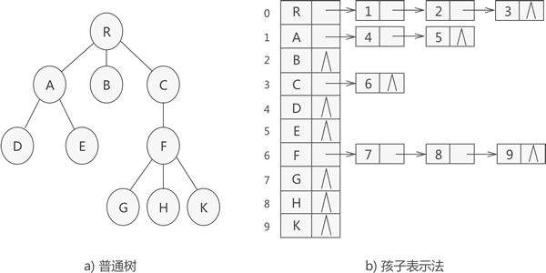
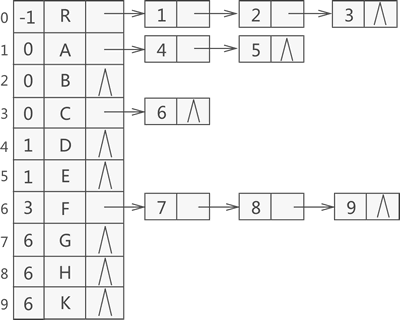

树的孩子表示法（C语言详解版）
孩子表示法存储普通树采用的是 "顺序表+链表" 的组合结构，其存储过程是：从树的根节点开始，使用顺序表依次存储树中各个节点，需要注意的是，与双亲表示法不同，孩子表示法会给各个节点配备一个链表，用于存储各节点的孩子节点位于顺序表中的位置。
如果节点没有孩子节点（叶子节点），则该节点的链表为空链表。
例如，使用孩子表示法存储图 1a) 中的普通树，则最终存储状态如图 1b) 所示：
图 1 孩子表示法存储普通树示意图
图 1 所示转化为 C 语言代码为：
#include<stdio.h>
#include<stdlib.h>
#define MAX_SIZE 20
#define TElemType char
//孩子表示法
typedef struct CTNode {
int child;//链表中每个结点存储的不是数据本身，而是数据在数组中存储的位置下标
struct CTNode * next;
}ChildPtr;
typedef struct {
TElemType data;//结点的数据类型
ChildPtr* firstchild;//孩子链表的头指针
}CTBox;
typedef struct {
CTBox nodes[MAX_SIZE];//存储结点的数组
int n, r;//结点数量和树根的位置
}CTree;
//孩子表示法存储普通树
CTree initTree(CTree tree) {
printf("输入节点数量：\n");
scanf("%d", &(tree.n));
for (int i = 0; i < tree.n; i++) {
printf("输入第 %d 个节点的值：\n", i + 1);
getchar();
scanf("%c", &(tree.nodes[i].data));
tree.nodes[i].firstchild = (ChildPtr*)malloc(sizeof(ChildPtr));
tree.nodes[i].firstchild->next = NULL;
printf("输入节点 %c 的孩子节点数量：\n", tree.nodes[i].data);
int Num;
scanf("%d", &Num);
if (Num != 0) {
ChildPtr * p = tree.nodes[i].firstchild;
for (int j = 0; j < Num; j++) {
ChildPtr * newEle = (ChildPtr*)malloc(sizeof(ChildPtr));
newEle->next = NULL;
printf("输入第 %d 个孩子节点在顺序表中的位置", j + 1);
scanf("%d", &(newEle->child));
p->next = newEle;
p = p->next;
}
}
}
return tree;
}
void findKids(CTree tree, char a) {
int hasKids = 0;
for (int i = 0; i < tree.n; i++) {
if (tree.nodes[i].data == a) {
ChildPtr * p = tree.nodes[i].firstchild->next;
while (p) {
hasKids = 1;
printf("%c ", tree.nodes[p->child].data);
p = p->next;
}
break;
}
}
if (hasKids == 0) {
printf("此节点为叶子节点");
}
}
int main()
{
CTree tree;
for (int i = 0; i < MAX_SIZE; i++) {
tree.nodes[i].firstchild = NULL;
}
tree = initTree(tree);
//默认数根节点位于数组notes[0]处
tree.r = 0;
printf("找出节点 F 的所有孩子节点：");
findKids(tree, 'F');
return 0;
}
程序运行结果为：
输入节点数量：
10
输入第 1 个节点的值：
R
输入节点 R 的孩子节点数量：
3
输入第 1 个孩子节点在顺序表中的位置1
输入第 2 个孩子节点在顺序表中的位置2
输入第 3 个孩子节点在顺序表中的位置3
输入第 2 个节点的值：
A
输入节点 A 的孩子节点数量：
2
输入第 1 个孩子节点在顺序表中的位置4
输入第 2 个孩子节点在顺序表中的位置5
输入第 3 个节点的值：
B
输入节点 B 的孩子节点数量：
0
输入第 4 个节点的值：
C
输入节点 C 的孩子节点数量：
1
输入第 1 个孩子节点在顺序表中的位置6
输入第 5 个节点的值：
D
输入节点 D 的孩子节点数量：
0
输入第 6 个节点的值：
E
输入节点 E 的孩子节点数量：
0
输入第 7 个节点的值：
F
输入节点 F 的孩子节点数量：
3
输入第 1 个孩子节点在顺序表中的位置7
输入第 2 个孩子节点在顺序表中的位置8
输入第 3 个孩子节点在顺序表中的位置9
输入第 8 个节点的值：
G
输入节点 G 的孩子节点数量：
0
输入第 9 个节点的值：
H
输入节点 H 的孩子节点数量：
0
输入第 10 个节点的值：
K
输入节点 K 的孩子节点数量：
0
找出节点 F 的所有孩子节点：G H K
其实，我们还可以将双亲表示法和孩子表示法合二为一，那么图 1a) 中普通树的存储效果如图 2所示：

图 2 双亲孩子表示法
使用图 2 结构存储普通树，既能快速找到指定节点的父节点，又能快速找到指定节点的孩子节点。该结构的实现方法很简单，只需整合这两节的代码即可，因此不再赘述。
关注公众号「站长严长生」，在手机上阅读所有教程，随时随地都能学习。内含一款搜索神器，免费下载全网书籍和视频。

微信扫码关注公众号